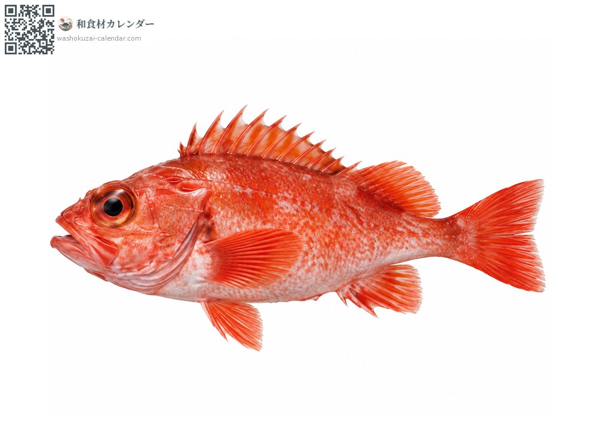
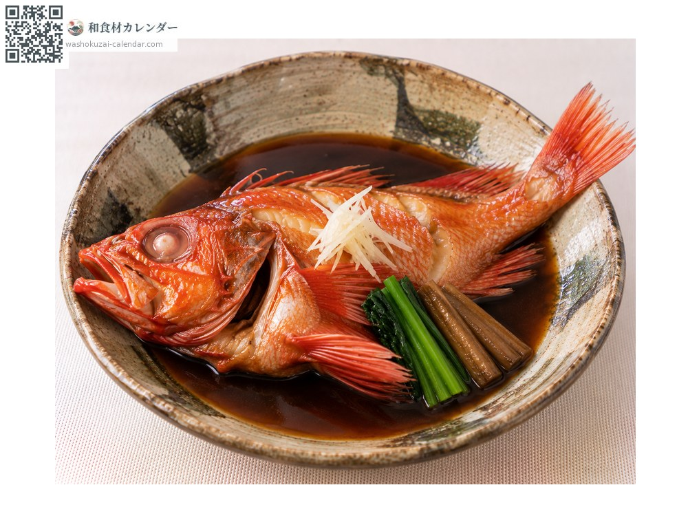
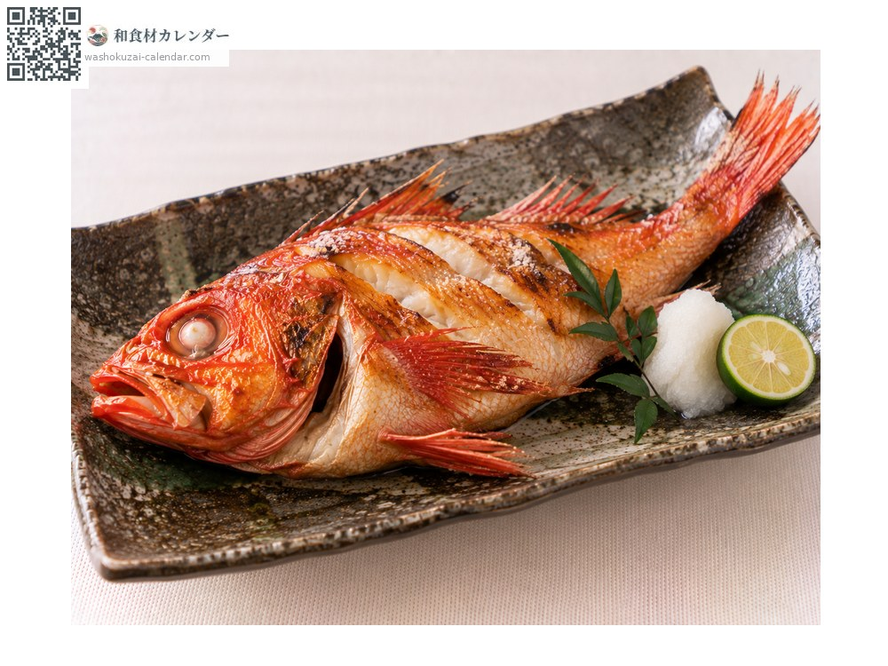
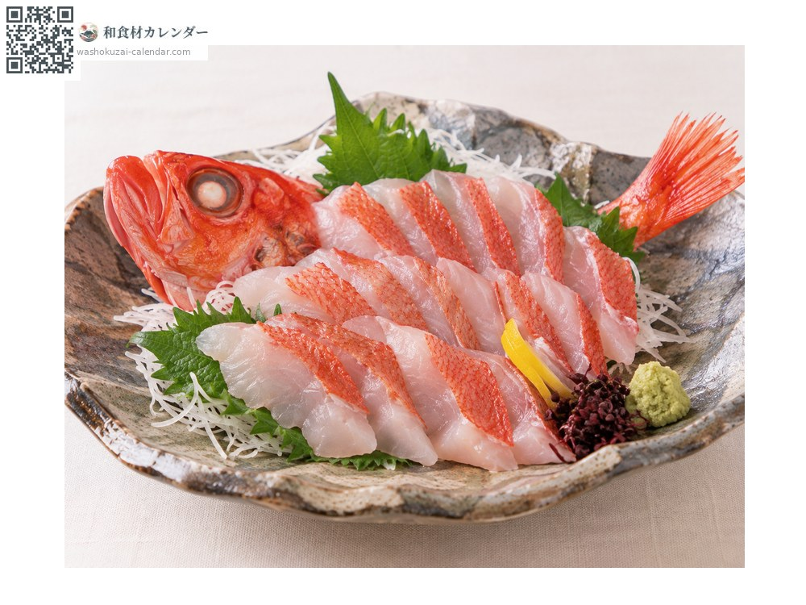
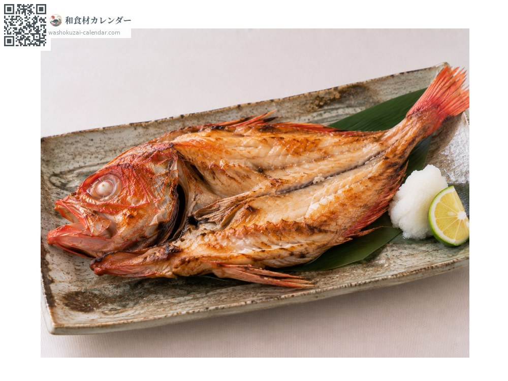

魚介
キンキ
きんき
別名・別表記喜知次、キチジ、メンメ、kinki、kichiji、menme
旬は1月・2月・12月
キンキの旬は12月から2月です。冬に脂がもっとものり、煮付けや塩焼きにすると身から脂がにじみ出ます。正式な名前はキチジで、東北ではメンメとも呼ばれます。

旬の時期
1月
2月
3月
4月
5月
6月
7月
8月
9月
10月
11月
12月
旬出回り
調理法

煮付け
甘辛く煮る。脂が多いので少し濃いめの味付けが合う。

塩焼き
脂が滴るほど。皮目を香ばしく焼く。

湯引き
皮を湯にくぐらせて刺身に。皮の甘みが出る。

一夜干し
塩水に漬けて干す。脂の旨みが凝縮する。
選び方
体色が鮮やかな朱赤で、目が澄んでいるもの。腹に張りがあり、うろこが揃っているもの。
保存方法
内臓を取って冷蔵。脂が多く酸化しやすいので、2日以内に使い切る。
主な産地
豆知識
正式名はキチジ。北海道・羅臼の「羅臼キンキ」が最高級とされる。深海性で漁獲量が少なく、高級魚として扱われる。
よくある質問
キンキはなぜ高いのですか？
水深数百メートルの深い海にすむ魚で、とれる量が少ないためです。育つのにも時間がかかり、大きなものほど値が張ります。
キンキはどうやって食べるのがおいしいですか？
煮付けと塩焼きが定番です。北海道では塩だけで煮る湯煮（ゆに）でも食べます。脂が多いので、味付けは薄めが合います。
キンキとキンメダイは同じ魚ですか？
別の魚です。どちらも赤い高級魚ですが、キンキはカサゴの仲間、キンメダイはキンメダイの仲間です。